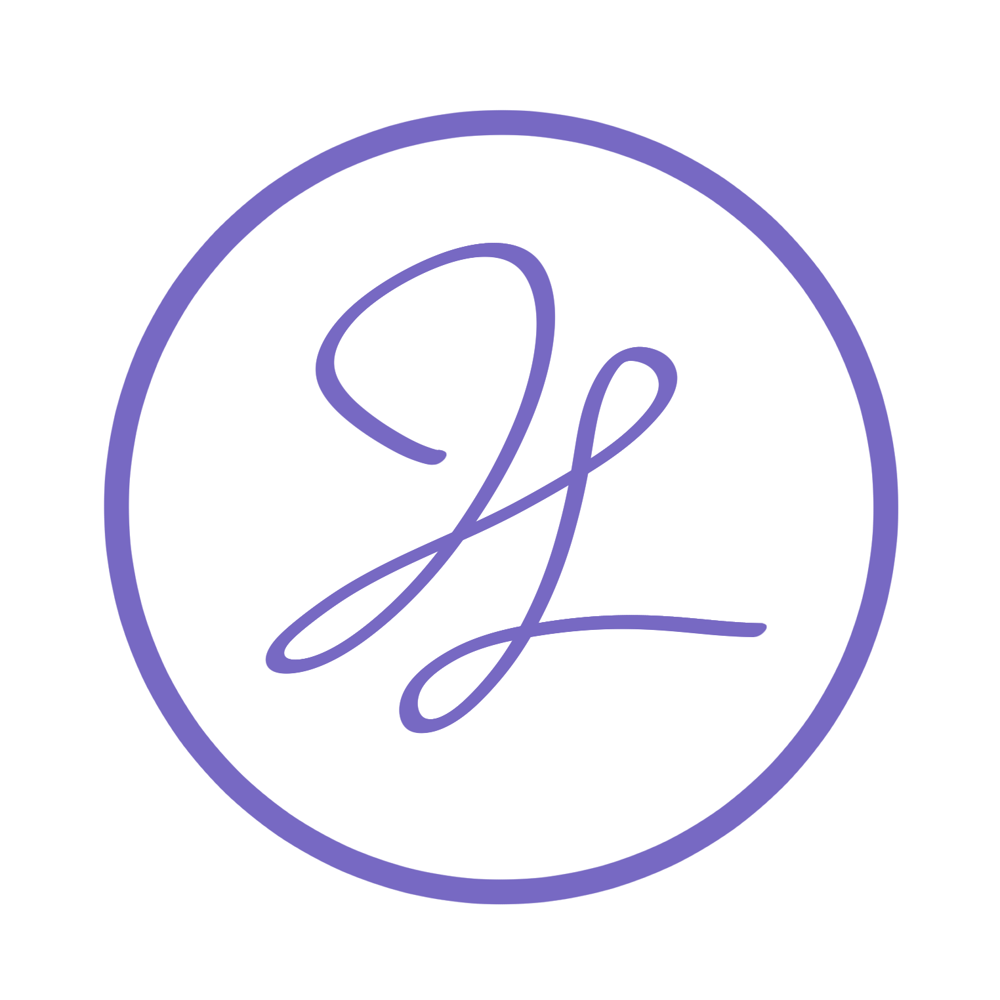

I am a passionate, self-motivated aspiring designer and programmer. I graduated from
the University of California, Davis with a Bachelor of Science in
Computer Science. Even while completing my major, I had a strong
interest in the more visual aspects of programming and took a web
programming, mobile app development, and human computer interaction
courses. I found the material from my human computer interaction class
especially interesting, but unfortunately I was graduating at the end of
the quarter that I took it. Because of that class, I started thinking about
switching gears from hard coding and I would love to get my foot in the door in
the world of UI/UX design.
~~~~
During my academic career, I worked a lot with the community around me
and actively participated in a volunteer/community service organization called
Circle K International. As part of my volunteer experience, I had the
privilege of working for Circle K International at UC Davis as a
Creative Director and Webmaster for two years where I was in charge of
upkeeping and revamping the Davis CKI website. The first year, I had
focused on adding much needed information that was missing from the
previous year but the second year I completed redesigned the website to
give it a better aesthetic and was awarded with 1st Place Outstanding
Club Website "for producing a creative and innovative club website".
The following year, I served as a Service Director for Davis CKI as well as a Distict
Website Assistant for the organization's CNH District for one year.
Through these positions, I learned valuable professional skills such as
web design, database design, communication, and leadership.